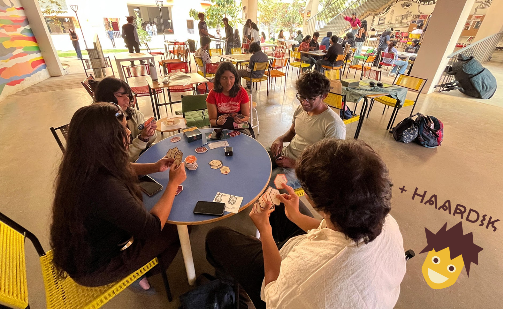
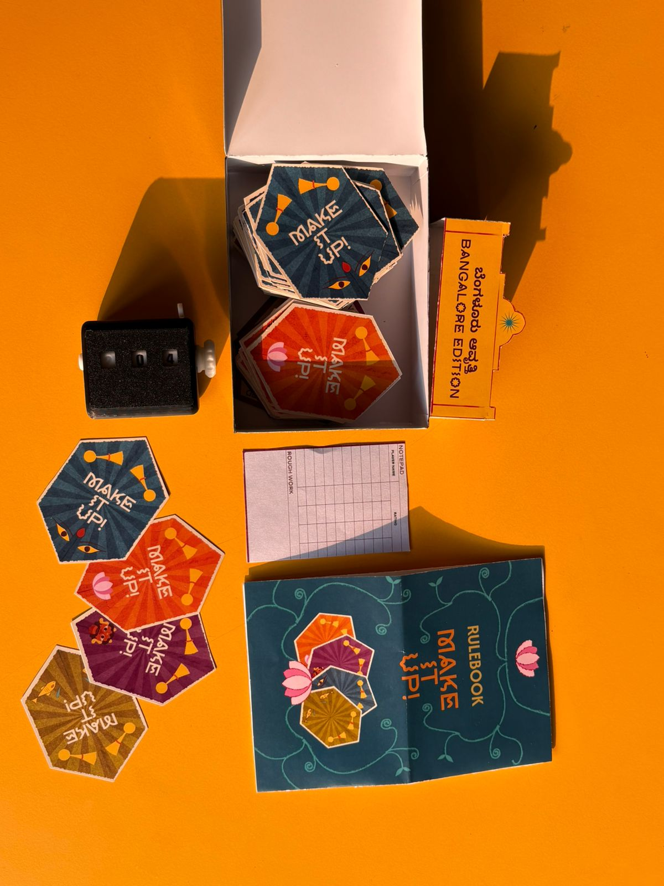

a finished game!
a finished, printed game with four card categories, packaging, a sleeve, and a 3D-printed round counter.
 kshirajakshiraja
kshirajakshiraja
2006 · @ blr, india.
storytelling card game
providing structure to an inherently subjective game.

a finished, printed game with four card categories, packaging, a sleeve, and a 3D-printed round counter.
the game sparked potential investment interest from a Disney games manager.

the initial plan was an immersive science-fiction game following a mad scientist.
we wanted players to build narratives they were invested in, with enough agency to make each story their own.
we experimented with cross-platform play, adding audio and virtual reality. everything connected through a local server on our laptop, acting as a makeshift digital game master.
it was getting too messy, so we scrapped it.
make it up is a storytelling card game where players scramble to invent the most convincing story for their very demanding boss.
hover, focus, or tap a card to flip it and peek at its prompt.
combine event, subject, and setting cards to give your excuse a beginning, a character, and a place.
play wildcards to sabotage, defend, or meddle with someone else's carefully curated plot.
call the round, tell your story, and let the table score how entertaining, coherent, or impressively bullshit it is.

subject cards look right at the player. wildcards use bommai motifs, traditionally meant to ward off the evil eye.
players are more invested when the variables in a story feel familiar to them.
future versions could move the game to different cities, or even different universes.
a round depends on group chemistry. instead of designing around that, we made room for it.
logistics! we did not expect the biggest obstacle to be dpi and card alignment. even in the final execution the alignment is not completely perfect. it was a part of the process we underestimated and ultimately had to rush.
a good game is defined by whether people actually enjoy playing it.
the real engine of the game is the group of players sitting around the table.
rigorous playtesting helped us find mistakes early. iterate and put it out there instead of optimizing in theory.
shout out to my teammates, faculty (abhimanyu ghimiray), and play testers for making this happen!